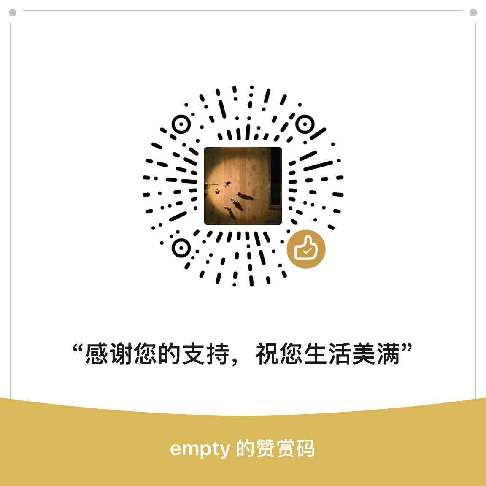

01 / REPO MAP
Find the right document first.
Use list_documents and search_documents
before drilling into a section. Agents stop guessing from README
fragments.
CodeGraph helps agents navigate code. Cairn helps them navigate docs: README files, specs, ADRs, PDFs, and repo knowledge exposed through MCP.
pip install docsgraph
docsgraph init -y
docsgraph sync --fake
docsgraph install --client codex --yes --fakeCairn replaces anonymous chunks with document structure, stable section anchors, cross-references, entity mentions, summaries, and vector search.
Use list_documents and search_documents
before drilling into a section. Agents stop guessing from README
fragments.
Headings, hierarchy, summaries, and stable cairn://
anchors make answers easier to verify and cheaper to quote.
Cairn runs locally, exposes MCP over stdio, and can use deterministic fake providers for offline smoke tests.
Initialize, sync, inspect freshness, then serve a docs-aware MCP layer to Codex, Claude, Cursor, Goose, or any compliant client.
docsgraph init -yWrites a conservative .cairn/config.toml documentation policy.
docsgraph sync --fakeBuilds one structured index per source document with isolated failures.
docsgraph install --client codex --fakeWrites a workspace-aware MCP config; pass --repo only to pin a server to one repo.
$ docsgraph sync --fake
synced: 15/15 documents, 0 failed
$ docsgraph query repo "MCP trace outputSchema" --fake
docs/specs/mcp-tools.md
section: Trace
$ docsgraph doctor
Cairn doctor: okThe public surface gives agents both broad repo discovery and precise section-level retrieval.
Returns a ready-to-read context pack with ranked hits, explanations, and related sections.
Searches every indexed document and returns globally ranked section hits with doc ids.
Fetches a chosen section at gist, synopsis, digest, or full granularity.
Exposes document, section, entity, contains, xref, and mention edges for repo docs.
docsgraph, with cairn as a CLI alias.Start with the README, inspect the architecture canvas, or install from PyPI and point your agent at the repository.
Cairn is Apache-2.0. Sponsorship is optional, but it helps keep the docs graph, release automation, and agent integrations moving.
If Cairn saves you time, use the GitHub Sponsor button or scan the WeChat reward code. For bugs, security reports, and usage help, start with the support policy in the repository.
